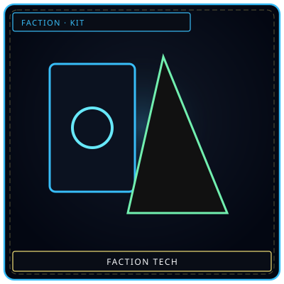
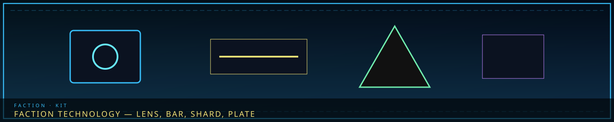
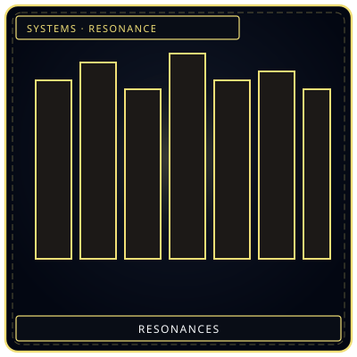
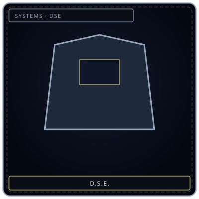

DevicesLens / bar / shard
/// RAPID JUMP:
STATUS: ARCHIVE VERIFIED |
CLEARANCE: LEVEL-4 OVERSIGHT |
PROTOCOL: REVERIE DIRECTORATE
ARTICLE
DISCUSSION
SOURCE
HISTORY
YEAR 4,238 · DAWN OF HOPE
FACTIONS · INSTRUMENTS
Faction Technology
“Four objects. None of them are a person. All of them hum a faction note.”


ResonanceThe note in the kit
DSEIssued before M.A.W.Guild instruments
| Faction | Tools | What they do | Unique trait | Article |
|---|---|---|---|---|
| Council | Sigh Recorder, Decision Scale | Store exhaled burden; weigh a decision’s sorrow (not its joy) | The Scale does not weigh happiness | Council |
| Architects | Sorrow Compass, Han-Trowel | Find Han-flow; cut and seal crystal with the user’s feeling | The trowel cuts only as honestly as the hand | Architects |
| Collectors | Debt-Ledger, Extraction Glove | Show weight; pull Echoes | Both judge malice; the glove makes the Collector feel the debtor | Collectors |
| Keepers | Memory Lens, Whispering Index | Play Echoes; catalog that speaks in riddles | Lens mixes the viewer in; Index may be alive | Keepers |
| Wardens | Barrier Baton, Watchtower Eye | Suppression field; Desolate scan | Baton absorbs grief; Eye sees feeling | Wardens |
| Weavers | Dream Loom, Resonance Mask | Pull/send through Somnus; anchor identity | Loom dreams idle; Mask is a library of dives | Weavers |
| R.D. | Lament Well, cells, rigs, gauges | Contain, extract, measure | Extraction Resonance on top of the kit | R.D. |
| Judexhan | Judgment Blade, forehead implant | Cut Han-defense; count absorbed sorrow until retirement | The implant is a countdown | Judexhan |
| Giltong | Taboo Scanner, Containment Bonds, Arbiter’s Blade, Taboo Archive | Read violation signatures; shut down Resonances | Scanner is the city’s immune read | Giltong |
| Menders | Kit, Repair Rod | Field repair paid in the Mender’s own sorrow | Rod maps every crack it has sealed | Menders |
Main Factions
1. The Council of Sighs — The Weight Bearers
Unique Tech:
The Sigh-Recorder (한숨 기록기 — Hansum Girokgi)
What it is: A device that records and stores sighs — the exhaled sorrow of Council members.
Appearance: A crystalline orb, about the size of a fist, that pulses faintly with each recorded sigh.
How it works:
- When a Council member sighs, the orb captures the exhaled sorrow
- The sigh is stored as a compressed Echo — containing the weight of the decision that caused it
- Stored sighs can be played back — allowing others to feel the weight of governance
- The Council uses sigh-records as evidence of their burden — proof that they carry the city's weight
Unique trait: Playing back a Council member's sigh transfers a fraction of their burden to the listener. It is used in governance meetings — when the Council debates, they listen to each other's sighs to understand the weight of each decision.
The Decision Scale (결정 저울 — Gyeoljeong Jeoul)
What it is: A device that measures the consequences of a proposed decision — showing the weight of sorrow it will create.
Appearance: A large, ornate scale — one side holds a representation of the decision, the other holds crystallized sorrow.
How it works:
- A proposed decision is placed on one side
- The scale generates a representation of the decision's consequences on the other
- The heavier the consequence-side, the more sorrow the decision will create
- The Council uses the scale to make informed decisions — choosing the path of least sorrow
Unique trait: The scale is never wrong — but it only shows sorrow, not joy. A decision that creates happiness but also creates sorrow will still tip the scale. The Council must weigh joy themselves.
2. The Architects — The Shapers
Unique Tech:
The Sorrow Compass (한의 나침반 — Han-ui Nachimban)
What it is: A tool that points toward Han-flow lines — showing the Architect where sorrow flows through the city.
Appearance: A compass-like device with a needle made of crystallized sorrow. The needle points toward the nearest Han-flow line.
How it works:
- The needle resonates with ambient Han — pointing toward the strongest flow
- The Architect uses it to plan construction — building along flow lines for stability, or across them for containment
- The compass can detect hidden Han pockets — useful for finding unstable ground
Unique trait: The compass empathizes — if the Architect is emotionally distressed, the needle spins erratically. A calm Architect gets clear readings.
The Han-Trowel (한 삽 — Han Sap)
What it is: A construction tool — the Architect's primary instrument for shaping Han-crystal.
Appearance: A trowel made of solidified sorrow — warm, slightly flexible, responds to the user's grip.
How it works:
- The trowel cuts, shapes, and smooths Han-crystal
- The tool amplifies the Architect's emotional state — calm hands produce smooth cuts, shaky hands produce rough ones
- The trowel can seal cracks in Han-structures — filling gaps with the Architect's own sorrow
Unique trait: The trowel remembers every cut it has made. Over time, the tool develops a personality — it prefers certain cuts, resists others. Master Architects have trowels that practically shape on their own.
3. The Collectors — The Debt Enforcers
Unique Tech:
The Debt-Ledger (부채 장부 — Bicheo Jangbu)
What it is: A record-keeping device — the Collector's primary tool for tracking debts.
Appearance: A book-like device made of crystallized sorrow — the pages are thin Han-crystal sheets that display text when activated.
How it works:
- The ledger records every debt in the Collector's jurisdiction
- Debts are displayed as weight — visualized as numbers, graphs, and emotional impressions
- The ledger can scan a person — showing their current debt load
- Debts can be transferred, paid, or deferred through the ledger
Unique trait: The ledger judges — if a Collector opens it with malicious intent, the pages display the Collector's own debts. It enforces fairness.
The Extraction Glove (추출 장갑 — Chuchul Janggap)
What it is: A glove that allows the Collector to physically extract Echoes from a debtor.
Appearance: A glove made of dark Han-crystal — the fingers are slightly elongated, the palm glows faintly.
How it works:
- The Collector places their hand on the debtor
- The glove resonates with the debtor's karmic weight
- Echoes are drawn out through the palm — crystallized sorrow extracted as payment
- The process is painless — but emotionally exhausting for the debtor
Unique trait: The glove feels — the Collector experiences a fragment of the debtor's sorrow during extraction. Some Collectors become numb. Others break.
4. The Keepers — The Memory Guardians
Unique Tech:
The Memory Lens (기록 렌즈 — Girok Renjeu)
What it is: A device that allows the Keeper to view stored memories — seeing them as visual, auditory, and emotional playback.
Appearance: A monocle made of crystallized memory — the lens is a thin Echo that displays content when worn.
How it works:
- The Keeper places an Echo near the lens
- The lens resonates with the Echo — displaying its contents as a holographic projection
- The Keeper can experience the memory — seeing, hearing, and feeling what the original person felt
- The lens can compare memories — finding patterns, contradictions, and connections
Unique trait: The lens remembers the viewer — if a Keeper looks through it too often, the lens starts showing the Keeper's own memories alongside the stored ones. The boundary between self and other blurs.
The Whispering Index (속삭임 색인 — Soksagim Saegin)
What it is: A catalog system — the Archive's master index of all stored memories.
Appearance: Not a single device — a network of Han-crystal threads that permeate the Grand Archive. The threads hum with stored data.
How it works:
- The Index catalogs every Echo in the Archive — by emotion, date, source, and content
- Keepers can query the Index by touching a thread and asking a question
- The Index responds with whispers — pointing the Keeper toward relevant Echoes
- The Index can cross-reference — finding connections between seemingly unrelated memories
Unique trait: The Index speaks — it has developed a personality over centuries. It answers questions with riddles, hints, and fragments. Some Keepers believe the Index is alive.
5. The Wardens — The Border Defenders
Unique Tech:
The Barrier Baton (방벽 지팡이 — Bangbyeok Jipangi)
What it is: A weapon and tool — the Warden's primary instrument for creating Han-suppression fields.
Appearance: A baton made of reinforced Han-crystal — dark, heavy, slightly warm. The tip glows when activated.
How it works:
- The baton projects a small Han-suppression field — dampening sorrow in a radius around the tip
- The field can be focused — creating a shield, a barrier, or a dampening zone
- The baton can also be used as a weapon — striking with the weight of suppressed sorrow
- The field strength depends on the Warden's emotional state — calm Warden = strong field
Unique trait: The baton absorbs — it takes in the sorrow it suppresses. Over time, the baton becomes heavier — not physically, but emotionally. A veteran Warden's baton is dense with absorbed grief.
The Watchtower Eye (감시탑의 눈 — Gamsitap-ui Nun)
What it is: A surveillance device — mounted on Watchtowers along Zone E's border.
Appearance: A crystalline sphere, about the size of a head, that glows faintly. Mounted on a metal arm extending from the tower.
How it works:
- The sphere scans the Desolate — detecting Han flows, Sorrow Entities, and movement
- Data is transmitted to the Warden command center in real-time
- The sphere can focus — zooming in on specific areas or entities
- The sphere alerts when it detects threats — glowing red for danger
Unique trait: The sphere sees emotions — it doesn't just detect physical movement, but emotional intensity. A group of frightened people registers differently than a calm patrol.
6. The Weavers — The Dream Walkers
Unique Tech:
The Dream Loom (꿈 베틀 — Kkum Betel)
What it is: A device that allows the Weaver to weave Dream and reality together — creating controlled intersections between the two realms.
Appearance: A frame made of crystallized Dream — translucent, shifting, never quite the same shape twice. Threads of light stretch across the frame.
How it works:
- The Weaver stretches Dream-threads across the frame
- The threads resonate with the Dream realm — creating a thin barrier between worlds
- By manipulating the threads, the Weaver can pull objects, information, or entities from the Dream
- The Loom can also be used to send things into the Dream — memories, messages, warnings
Unique trait: The Loom dreams — when not in use, it displays fragments of the Dream realm on its threads. Watching the Loom is mesmerizing — and addictive.
The Resonance Mask (공명 가면 — Gongmyeong Gamyeon)
What it is: A mask that protects the Weaver during Dream-diving — anchoring them to reality.
Appearance: A mask made of crystallized reality — solid, warm, slightly humming. The eyes are clear crystal — allowing the Weaver to see both Dream and reality simultaneously.
How it works:
- The Weaver wears the mask during Dream-diving
- The mask anchors the Weaver's identity — preventing dissolution in the Dream
- The mask filters Dream perception — showing reality through the Dream's lens
- If the Weaver becomes too deep, the mask pulls them back — a safety mechanism
Unique trait: The mask remembers every Dream the Weaver has entered. Over time, the mask becomes a library of Dream-experiences — the Weaver can revisit past Dives by touching the mask.
7. The R.D. — The Reverie Directorate
Already established:
- The Lament Well — extracts Sorrow Entities through resonance frequencies
- The Mnemonic Generator — stabilizes facility, contains breaches
- Containment Cells — entity-specific holding
- M.A.W. Extraction Rigs — equipment extraction
- Sorrow Gauges — entity monitoring
- Cast Effigy Systems — Echo-Core body construction
- Core Suppression Chambers — trauma confrontation
- Han-Crystal Storage — Absolvohan stockpile (secret)
- Resonance Scanners — entity-person compatibility
- Dream Chambers — Dream realm access
8. The Judexhan — The Arbiters
Unique Tech:
The Judgment Blade (심판의 칼 — Simpan-ui Kal)
What it is: A weapon — the Judexhan's primary instrument of enforcement.
Appearance: A sword made of crystallized judgment — dark, heavy, the blade glows with a faint Han-crystal light. The edge is sharp enough to cut sorrow itself.
How it works:
- The blade cuts through Han-based defenses — Veil barriers, entity shields, sorrow armor
- The blade judges — it deals more damage to those with heavy karmic debt
- The blade absorbs the target's sorrow on contact — growing heavier with each strike
- The blade cannot be wielded by anyone with unresolved debt — it rejects the unworthy
Unique trait: The blade remembers every judgment — each person it has cut, each debt it has weighed. The blade's history is written in its crystalline structure — visible to those who know how to read it.
The Han-Crystal Implant (한 크리스탈 이식 — Han Keuriseutal Isik)
What it is: A surgical modification — the glowing Han-crystal embedded in each Judexhan's forehead.
Appearance: A small, glowing crystal — embedded in the skull, visible through the skin. The crystal pulses with the Judexhan's accumulated sorrow.
How it works:
- The crystal connects the Judexhan to the Council's command network
- It amplifies the Judexhan's physical abilities — speed, strength, endurance
- It absorbs sorrow from targets — storing it within the Judexhan's body
- It suppresses the Judexhan's emotions — allowing them to operate without hesitation
Unique trait: The crystal counts — it tracks how much sorrow the Judexhan has absorbed. When the crystal reaches capacity, the Judexhan is "retired" — taken deep beneath the Alpha Tree. What happens next is unknown.
8b. The Giltong (질동) — The Taboo Enforcers
Unique Tech:
The Taboo Scanner (금기 탐지기 — Geumgi Tamjigi)
What it is: A handheld detection device — the Giltong's primary tool for identifying Taboo violations.
Appearance: A palm-sized disc of dark Han-crystal, warm to the touch, with a central lens that glows crimson when a violation is detected. The intensity of the glow corresponds to the severity of the Taboo breach.
Function:
- Detects unique Han-signatures left by each type of Taboo violation
- Range: approximately 50 meters in open space, 15 meters through walls
- Can distinguish between residual traces (old violations) and active breaches (ongoing)
- Linked to the Taboo Archive — each scan is logged with location, time, and signature type
Limitation: Cannot detect Taboo violations that have been deliberately masked by a Fray Memory-Washer. The scanners are also ineffective during a Sorrow Tide (ambient Han overwhelms the signal).
The Containment Bonds (봉인 밧줄 — Bong'in Batjul)
What it is: Han-crystal restraints — used to suppress Taboo-related abilities in captured violators.
Appearance: A coil of dark, flexible Han-crystal chain — cold to the touch, faintly humming. When wrapped around a person's wrists, the links fuse and tighten to a precise fit.
Function:
- Suppresses the violator's ability to use Han — including M.A.W., Resonances, and Taboo abilities
- Cannot be removed by force — only a Senior Giltong or the Arbiter can release them
- The bonds feed data to the Taboo Scanner network — the violator's Han-signature is logged
- Prolonged wear (48+ hours) begins to suppress emotions — a side effect, not a feature
Limitation: The bonds can be overloaded by a sufficiently powerful entity or a Sovereign-grade Sorrow Entity breaching nearby. They are tools for people, not entities.
The Arbiter's Blade (중재자의 칼 — Jungjaeja-ui Kal)
What it is: A weapon — carried only by the Arbiter (the Giltong's supreme authority). It can sever the connection between a violator and a Taboo violation.
Appearance: A single-edged blade of pale Han-crystal, approximately 60 cm long. The edge is impossibly sharp — it does not cut flesh; it cuts connections. The blade glows white when held, and hums in the presence of an active Taboo violation.
Function:
- Can sever the metaphysical link between a person and a Taboo effect — reversing resurrection, collapsing a synthesized sorrow, or shattering a duplicated Echo-Core
- Each cut costs the Arbiter emotionally — the blade feeds on the wielder's certainty
- The blade has only one edge — it cannot be used for ordinary violence, only for Taboo correction
- Only the Arbiter can wield it — anyone else who touches it feels overwhelming doubt
Limitation: The blade's effect is permanent and irreversible. If the Arbiter makes a mistake — cutting a connection that should have been preserved — there is no undoing it. This is why the Arbiter is chosen for their accumulated sorrow: they have seen enough to know when a connection must be cut.
The Taboo Archive (금기 기록보관소 — Geumgi Girokbogwanso)
What it is: Not a tool but a place — a sealed vault beneath the Sigh Palace containing records of every Taboo case in the city's history.
Appearance: A cold, dry chamber lined with Han-crystal shelves. Each case is recorded on a thin tablet of dark crystal — the text glowing faintly, readable only by Giltong Archivists.
Function:
- Contains over 12,000 case records spanning 6,000 years
- Each record includes: the violation, the violator (if known), the response, the sentence, and the outcome
- The Archive is searchable — Giltong Investigators can cross-reference Han-signatures with past cases
- The deepest shelves contain the most dangerous records — cases involving the Maw, the Cycle, or the Director's secret permissions
Limitation: The Archive is not complete. Some records were lost during the Occlusihan. Others were deliberately erased — by whom, and why, is itself a classified case.
Independent Operators
9. The Menders — The Menders
Unique Tech:
The Mender's Kit (수선자 도구함 — Suseonja Doguhan)
What it is: A portable toolkit — the Mender's primary equipment for repairs, containment, and field work.
Appearance: A leather-and-crystal case containing various tools — trowels, probes, gauges, sealant, and Echo reserves.
How it works:
- The kit contains everything a Mender needs for field work
- Tools are Han-crystal — they respond to the user's emotional state
- The kit includes a small Sorrow Gauge — for field assessment
- Echo reserves provide emergency power — for tools and personal use
Unique trait: Each Mender's kit is personalized — the tools adapt to the Mender's style over time. A Mender's kit is as unique as their fingerprint.
The Repair Rod (수리 막대 — Suri Makdae)
What it is: A tool for repairing Han-structures — the Mender's equivalent of a wrench.
Appearance: A rod made of flexible Han-crystal — warm, slightly glowing, adapts to the user's grip.
How it works:
- The rod identifies cracks in Han-structures — vibrating when near damage
- The rod fills cracks with the user's own sorrow — sealing the damage
- The rod can reinforce weak areas — strengthening structures before they fail
- The rod can also be used as a weapon — in emergencies
Unique trait: The rod remembers every repair — it develops a map of the city's structural weaknesses over time. Experienced Menders can navigate the city by following their rod's memory.
The Frays
10. The Harvesters — Illegal Echo Extractors
Unique Tech:
The Harvest Hook (수확 갈고리 — Suhwak Galgoli)
What it is: A tool for forcibly extracting Echoes from people — the Harvester's primary instrument.
Appearance: A hook made of dark Han-crystal — barbed, sharp, warm. The hook glows when it detects a rich Echo source.
How it works:
- The hook is driven into the target's body — not flesh, but their sorrow-layer
- The hook extracts Echoes directly — pulling crystallized emotion from the target's karmic weight
- The process is painful — the target feels their sorrow being torn out
- Extracted Echoes are collected in a reservoir attached to the hook
Unique trait: The hook feeds — it grows stronger with each extraction. A well-used hook can extract Echoes faster, but it also becomes harder to control. Some hooks develop a hunger of their own.
11. The Debt Brokers — Debt Traders
Unique Tech:
The Debt-Transfer Pad (부채 이전 패드 — Bicheo Ijen Paedeu)
What it is: A device for transferring debts between individuals — the Broker's primary business tool.
Appearance: A flat, rectangular pad of Han-crystal — warm, slightly glowing. Two hand-prints are embedded in the surface.
How it works:
- The debtor and the recipient place their hands on the pad
- The pad reads both individuals' karmic weight
- Debt is transferred — moving from one person to the other
- The transfer is recorded in the pad's memory — a legal record
Unique trait: The pad charges a fee — a small percentage of the transferred debt is absorbed by the pad itself. The pad grows richer with each transaction. Some say the pad is alive — a tiny entity that feeds on debt.
12. The Veil Merchants — Counterfeit Veil Access
Unique Tech:
The Fake Veil-Stone (가짜 베일석 — Gajja Beilseok)
What it is: A counterfeit device — mimics the Veil's suppression field at a personal level.
Appearance: A small stone of Han-crystal — warm, slightly glowing, worn around the neck.
How it works:
- The stone projects a tiny Veil-like field — suppressing Han in a small radius around the wearer
- The field is weaker than the real Veil — but enough to provide comfort
- The stone must be recharged — with Echoes or proximity to real Veil infrastructure
- The stone's field flickers — it is not reliable
Unique trait: The stone lies — it makes the wearer feel safe, but the suppression is incomplete. Some sorrow gets through. The wearer doesn't notice — until the stone fails.
13. The Memory Washers — Memory Erasers
Unique Tech:
The Wash-Rig (세척 장치 — Sejeok Jangchi)
What it is: A device for forcibly erasing memories — the Washer's primary instrument.
Appearance: A chair-like device with Han-crystal attachments — headrest, armrests, footrests. The crystal glows when active.
How it works:
- The target is strapped into the rig
- The rig resonates with the target's memory-Echoes
- Specific memories are extracted — pulled out as crystallized Echoes
- The target forgets — the memories are gone, replaced by blank spots
- Extracted Echoes are collected and sold
Unique trait: The rig remembers what it erases — the stolen memories are stored in the rig's crystal structure. Some rigs have centuries of stolen memories embedded in them. The rigs whisper at night.
14. The Entity Traders — Sorrow Entity Traffickers
Unique Tech:
The Containment Cube (감금 큐브 — Gamgyung Keubeu)
What it is: A portable containment device — for capturing and transporting Sorrow Entities.
Appearance: A cube of dark Han-crystal — about the size of a suitcase. The surface is covered in suppression symbols. The cube hums when an entity is inside.
How it works:
- The cube is placed near a Sorrow Entity
- The cube's suppression field activates — drawing the entity inside
- The entity is contained within the cube's crystal structure — compressed, dormant
- The cube can be transported — moving the entity to a buyer's location
- The cube has a limited capacity — stronger entities require larger cubes
Unique trait: The cube suffers — the contained entity is not at peace. The cube vibrates, hums, and sometimes screams. Carrying a cube is carrying a prison.
The Underground
15. The Whisper Market — Information Brokers
Unique Tech:
The Whisper Pipe (속삭임 파이프 — Soksagim Paipeu)
What it is: A communication device — used for secure, anonymous information exchange.
Appearance: A tube of crystallized silence — dark, cold, sound-absorbing. Messages are whispered into one end and emerge from the other.
How it works:
- The sender whispers a message into the pipe
- The message travels through the crystallized silence — undetectable by anyone else
- The recipient hears the message from the other end
- The message self-destructs after delivery — leaving no trace
Unique trait: The pipe filters — it only carries truth. Lies are absorbed by the crystal. If someone tries to send a false message, the pipe delivers silence instead.
16. The Debtless — Debt Liberation Group
Unique Tech:
The Debt-Breaker (부채 파괴기 — Bicheo Paegoegi)
What it is: A device for severing inherited debts — freeing people from obligations they didn't incur.
Appearance: A pair of shears made of crystallized defiance — sharp, warm, slightly vibrating.
How it works:
- The shears are placed against the debtor's karmic weight
- The shears cut the connection between the debtor and the inherited debt
- The debt is severed — the debtor is free
- The severed debt dissipates — it doesn't transfer to anyone else
Unique trait: The shears cost — cutting a debt requires the user to sacrifice something of their own. A memory, a year of life, a piece of their identity. The Debtless pay the price willingly.
17. The Veil Breakers — Anti-Veil Activists
Unique Tech:
The Veil-Cracker (베일 균열기 — Beil Gyunyeolgi)
What it is: A device for disrupting Veil fields — temporarily disabling the Veil in a targeted area.
Appearance: A spike of crystallized anger — red, hot, vibrating with suppressed rage.
How it works:
- The spike is driven into the ground near a Veil generator
- The spike emits a resonance that interferes with the Veil's frequency
- The Veil flickers and weakens — sorrow floods in
- The effect is temporary — the Veil recovers within minutes
Unique trait: The spike rages — it was born from the collective anger of those who oppose the Veil. Using it feels like unleashing fury. Some Breakers become addicted to the feeling.
18. The Memory Thieves — Black Market Memory Traders
Unique Tech:
The Memory-Siphon (기록 흡입기 — Girok Heuibgi)
What it is: A device for stealing memories — the Thief's primary instrument.
Appearance: A needle of crystallized curiosity — thin, sharp, translucent. The needle glows when near a rich memory.
How it works:
- The needle is inserted near the target — not in their body, but in their memory-layer
- The needle draws out memories — pulling them as crystallized Echoes
- The process is painless — the target doesn't notice until they try to recall the stolen memory
- Stolen Echoes are sold on the black market
Unique trait: The needle remembers — it carries a faint impression of every memory it has stolen. Thieves sometimes get confused — their own memories mixing with stolen ones.
19. The Gate Runners — Exile Assistance
Unique Tech:
The Gate-Key (문 열쇠 — Mun Yeolsoe)
What it is: A device that can temporarily reverse the Exile's Gate — allowing someone to return from exile.
Appearance: A key made of crystallized hope — warm, glowing, fragile. The key is single-use.
How it works:
- The key is inserted into the Exile's Gate
- The key resonates with the Gate's mechanism — temporarily reversing its one-way function
- The exiled person can pass back through — but only for a brief window
- The key shatters after use — it cannot be reused
Unique trait: The key is rare — it requires a crystallized hope-Echo to create, and hope is the rarest emotion in Somnarak. Gate-Runners guard their keys jealously.
Faction Tech Summary
| Faction | Unique Tech | Primary Function |
|---|---|---|
| Council | Sigh-Recorder, Decision Scale | Governance, consequence measurement |
| Architects | Sorrow Compass, Han-Trowel | Construction, Han-flow navigation |
| Collectors | Debt-Ledger, Extraction Glove | Debt tracking, Echo extraction |
| Keepers | Memory Lens, Whispering Index | Memory viewing, Archive catalog |
| Wardens | Barrier Baton, Watchtower Eye | Suppression, surveillance |
| Weavers | Dream Loom, Resonance Mask | Dream interaction, Dream-diving safety |
| R.D. | Lament Well, Mnemonic Generator + 8 more | Containment, extraction, stabilization |
| Judexhan | Judgment Blade, Han-Crystal Implant | Enforcement, enhancement |
| Giltong | Taboo Scanner, Containment Bonds, Arbiter's Blade, Taboo Archive | Taboo detection, enforcement, violation correction |
| Menders | Mender's Kit, Repair Rod | Field repair, containment |
| Harvesters | Harvest Hook | Illegal Echo extraction |
| Debt Brokers | Debt-Transfer Pad | Debt trading |
| Veil Merchants | Fake Veil-Stone | Counterfeit Veil access |
| Memory Washers | Wash-Rig | Memory erasure |
| Entity Traders | Containment Cube | Entity trafficking |
| Whisper Market | Whisper Pipe | Secure communication |
| Debtless | Debt-Breaker | Debt liberation |
| Veil Breakers | Veil-Cracker | Veil disruption |
| Memory Thieves | Memory-Siphon | Memory theft |
| Gate Runners | Gate-Key | Exile reversal |
Every faction has a tool. Every tool has a cost. Every cost tells a story.